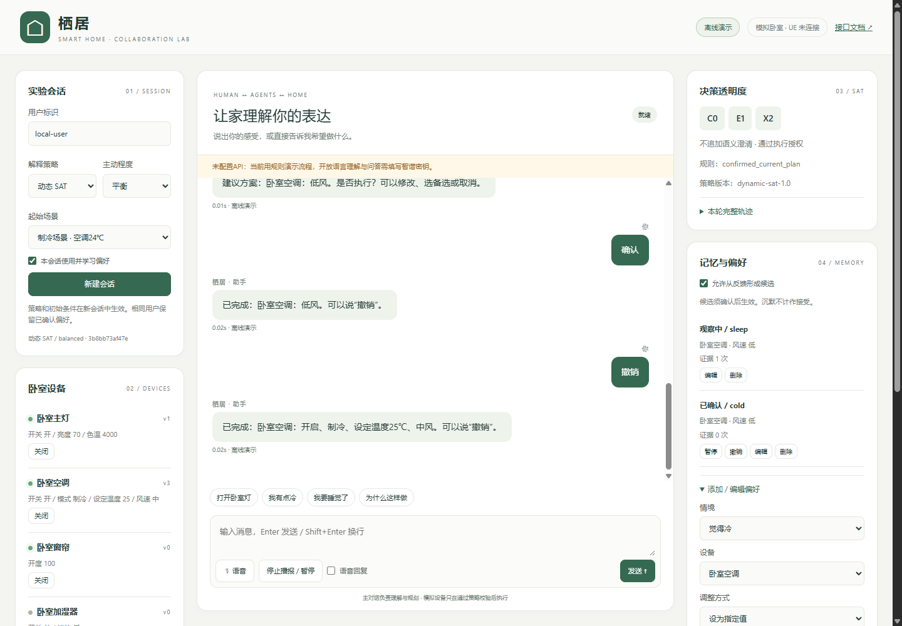

WORKING PROTOTYPE · UE5 SIMULATION
WORKING PROTOTYPE · UE5 SIMULATION
01
Master's thesis · 2026–present
Adaptive User Modeling for Uncertain Interaction
A closed-loop personal-agent testbed that learns from explanation requests, acceptance, rejection, and corrections.
- Persistent individual preference profiles
- Adaptive explanation decisions across interactions
- Multi-agent workflow connected to a controllable UE5 environment
- Technical validation complete; formal user study in preparation
Read the research logic +
The system represents multiple plausible interpretations of an ambiguous request and treats acting, explaining, clarifying, offering alternatives, and returning control as distinct choices. Feedback from each interaction updates the individual model used in later decisions.
